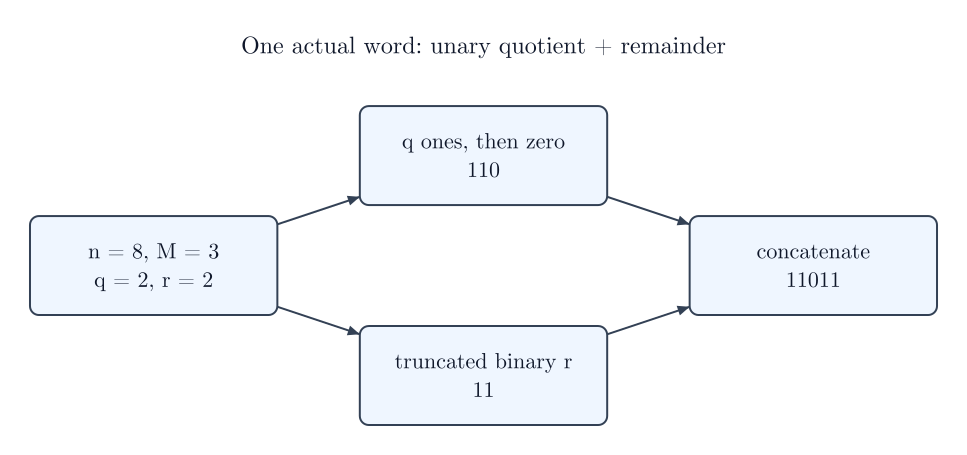
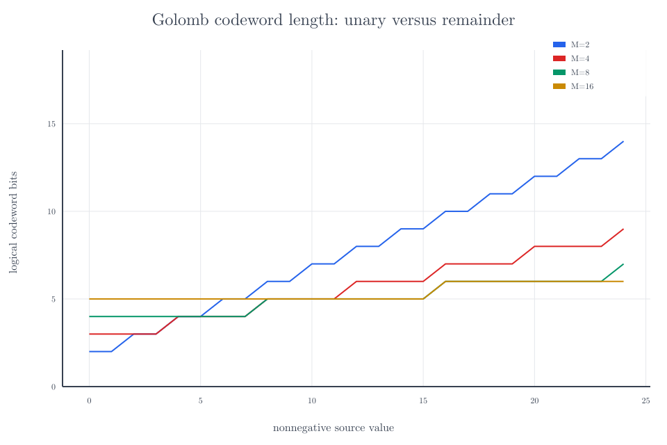
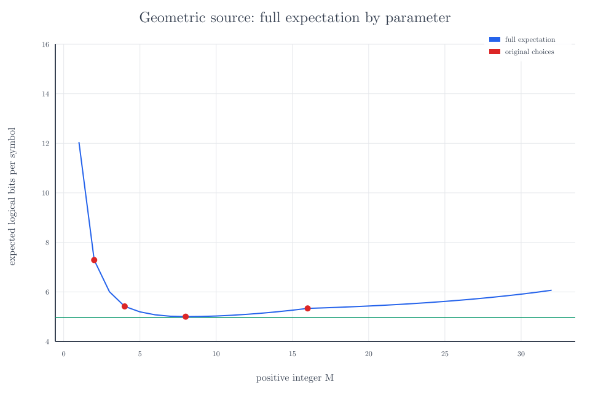
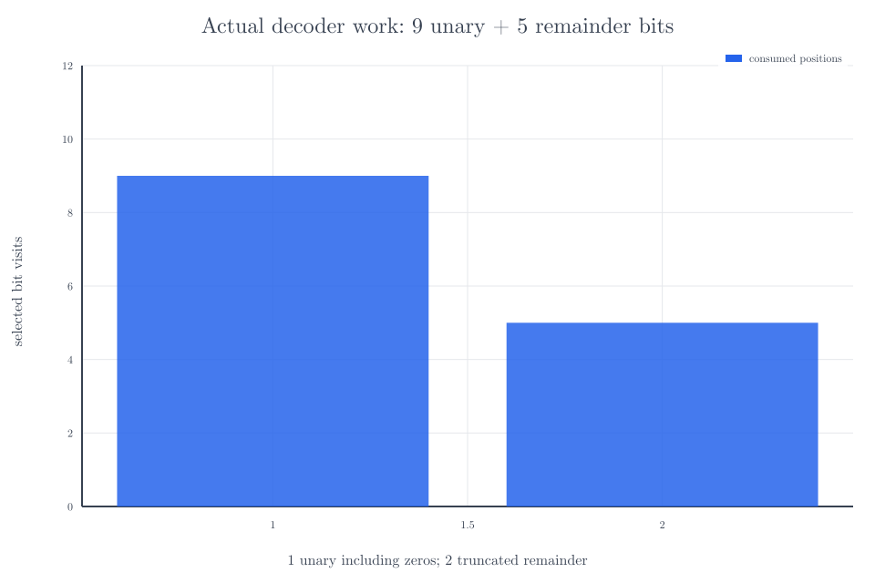

Golomb coding: split the quotient, fit the tail
Abstract
A stream of small nonnegative integers can waste space in fixed-width fields. Golomb coding divides each value by a shared positive parameter, emits a unary quotient, and appends a truncated-binary remainder. We begin with three hand-checkable words, derive their lengths and the prefix property, and compare parameters on an explicitly defined geometric source. Actual native records show emitted and consumed boundaries; boundary controls distinguish clean exhaustion from an incomplete word. The parameter and frame length remain external information, and compression claims count logical bits rather than packed files or runtime.
Three words around the truncated-binary split
For \(M=3\), divide a value into \(n=3q+r\). Write \(q\) ones followed by a
zero. The remainder alphabet has three values: encode 0 as 0, 1 as 10, and 2
as 11. The first gets a short one-bit code; the others need two bits. Values
6, 7 and 8 have the same quotient two, so their native records isolate this
remainder change.
#include <dm/dm.hpp>
int main() {
std::filesystem::create_directories("build");
const auto t = dm::algorithms::golomb_encode_trace({6, 7, 8}, 3, 3);
const auto text = dm::algorithms::golomb_bit_string(t.bits);
std::print("| n | q | r | unary | remainder | whole word | begin | end |\n| ---: | ---: | ---: | --- | " "--- | --- | ---: | ---: |\n");
for (const auto &w : t.words)
std::print("| {} | {} | {} | {} | {} | {} | {} | {} |\n", w.value,
w.quotient, w.remainder,
text.substr(w.begin, w.remainder_begin - w.begin),
text.substr(w.remainder_begin, w.end - w.remainder_begin),
text.substr(w.begin, w.end - w.begin), w.begin, w.end);
const auto &w = t.words.back();
dm::graphics::Diagram d(55, 1100);
dm::graphics::DiagramNodeStyle box;
box.width = 4.5;
box.height = 1.8;
box.font_size = 22;
d.node("split", {0, 0},
std::format("n = {}, M = 3\nq = {}, r = {}", w.value, w.quotient,
w.remainder), box).node("unary", {6, 2},
std::format(
"q ones, then zero\n{}",
text.substr(
w.begin,
w.remainder_begin - w.begin)),
box).node(
"remainder", {6, -2},
std::format("truncated binary r\n{}",
text.substr(w.remainder_begin, w.end - w.remainder_begin)),
box).node("word", {12, 0},
std::format("concatenate\n{}",
text.substr(w.begin, w.end - w.begin)), box).edge(
"split", "unary").edge("split", "remainder").edge("unary", "word").edge(
"remainder", "word").text({6, 4},
"One actual word: unary quotient + remainder",
24).save_svg("build/golomb_flow.svg");
if (text != "11001101011011")
throw std::runtime_error("small dictionary");
}| n | q | r | unary | remainder | whole word | begin | end |
|---|---|---|---|---|---|---|---|
| 6 | 2 | 0 | 110 | 0 | 1100 | 0 | 4 |
| 7 | 2 | 1 | 110 | 10 | 11010 | 4 | 9 |
| 8 | 2 | 2 | 110 | 11 | 11011 | 9 | 14 |

Derive lengths and unique parsing
Let \(b=\lceil\log_2 M\rceil\) and \(c=2^b-M\). A full depth-\(b\) binary tree has \(2^b\) leaves. Replacing \(c\) pairs of sibling leaves by their parents leaves exactly \(M\) codewords: \(c\) words of length \(b-1\), and \(M-c\) words of length \(b\). Assign the short words to remainders below \(c\); encode a larger remainder as the \(b\)-bit representation of \(r+c\). The bit-length formula is
For \(M=1\), the remainder is always zero and has no bits, so the word is purely unary. For a power of two, \(c=0\), and every remainder uses exactly \(b\) bits: this is Rice coding.
The first zero uniquely ends the unary prefix. In the remainder, read \(b-1\) bits; a value below \(c\) is complete, otherwise read one more bit and subtract \(c\). These leaf codes are prefix-free, so concatenated complete words have a unique parsing when \(M\) is known. Explicitly, their Kraft sum is
The degenerate \(M=1\) remainder tree consists of the empty word, whose Kraft sum is one; the displayed zero-coefficient short term then contributes zero.
Retain the original length comparison
The scalar length API calculates logical size without constructing a potentially enormous unary string. These are the original values 0,2,...,24 and parameters 2,4,8,16; the plot also includes intermediate values to reveal each integer step. A small parameter saves remainder bits near zero but makes the quotient expensive in the tail.
#include <dm/dm.hpp>
int main() {
std::filesystem::create_directories("build");
std::vector<std::uint64_t> original;
for (unsigned n = 0; n <= 24; n += 2)
original.push_back(n);
std::print("{}\n",
dm::algorithms::golomb_length_table(original, {2, 4, 8, 16}).select({"value", "M", "bits"}).to_md());
std::vector<std::uint64_t> grid(25);
std::iota(grid.begin(), grid.end(), 0);
dm::algorithms::golomb_length_plot(grid, {2, 4, 8, 16}).save_svg(
"build/golomb_lengths.svg");
}| value | M | bits |
|---|---|---|
| 0 | 2 | 2 |
| 0 | 4 | 3 |
| 0 | 8 | 4 |
| 0 | 16 | 5 |
| 2 | 2 | 3 |
| 2 | 4 | 3 |
| 2 | 8 | 4 |
| 2 | 16 | 5 |
| 4 | 2 | 4 |
| 4 | 4 | 4 |
| 4 | 8 | 4 |
| 4 | 16 | 5 |
| 6 | 2 | 5 |
| 6 | 4 | 4 |
| 6 | 8 | 4 |
| 6 | 16 | 5 |
| 8 | 2 | 6 |
| 8 | 4 | 5 |
| 8 | 8 | 5 |
| 8 | 16 | 5 |
| 10 | 2 | 7 |
| 10 | 4 | 5 |
| 10 | 8 | 5 |
| 10 | 16 | 5 |
| 12 | 2 | 8 |
| 12 | 4 | 6 |
| 12 | 8 | 5 |
| 12 | 16 | 5 |
| 14 | 2 | 9 |
| 14 | 4 | 6 |
| 14 | 8 | 5 |
| 14 | 16 | 5 |
| 16 | 2 | 10 |
| 16 | 4 | 7 |
| 16 | 8 | 6 |
| 16 | 16 | 6 |
| 18 | 2 | 11 |
| 18 | 4 | 7 |
| 18 | 8 | 6 |
| 18 | 16 | 6 |
| 20 | 2 | 12 |
| 20 | 4 | 8 |
| 20 | 8 | 6 |
| 20 | 16 | 6 |
| 22 | 2 | 13 |
| 22 | 4 | 8 |
| 22 | 8 | 6 |
| 22 | 16 | 6 |
| 24 | 2 | 14 |
| 24 | 4 | 9 |
| 24 | 8 | 7 |
| 24 | 16 | 6 |

Specify the geometric source before choosing a parameter
Use the zero-based source \(P(N=n)=(1-a)a^n\), with \(0\le a<1\). Here \(a\) is the tail ratio, not the success probability; success has probability \(1-a\). The original decay, one half every eight values, means \(a=2^{-1/8}\). Its mean is \(a/(1-a)\), about 11.05, rather than eight.
The quotient satisfies \(P(q\ge j)=a^{jM}\). Summing these tails gives \(E[q]=a^M/(1-a^M)\). Within one quotient block the remainder law is proportional to \(a^r\), so the probability of a long remainder is \((a^c-a^M)/(1-a^M)\). Adding the unary terminator and remainder contributions gives
At \(a=0\), use the length of zero directly. The formula also covers \(M=1\) and powers of two. The source entropy, a lower bound on the mean length of any binary prefix code for individual source symbols, is
The original program renormalized only values below 200. That computes \(E[\ell\mid N<200]\), omitting probability \(a^{200}\). The next table exposes this approximation alongside the full expectation. The figure searches all integer parameters 1 through 32 and separately marks the original four choices. It is an exhaustive comparison over that displayed set, not an empirical fit or a proof of optimality for arbitrary sources.
#include <dm/dm.hpp>
int main() {
std::filesystem::create_directories("build");
const double a = std::exp2(-1. / 8);
const auto original =
dm::algorithms::golomb_geometric_table(a, {2, 4, 8, 16}, 200);
std::print("Tail ratio {:.12f}; success probability {:.12f}; mean {:.9f}; omitted mass {:.9g}.\n\n{}\n",
a, 1 - a, a / (1 - a), std::pow(a, 200), original.to_md(12));
std::vector<int> parameters(32);
std::iota(parameters.begin(), parameters.end(), 1);
const auto all = dm::algorithms::golomb_geometric_table(a, parameters, 200);
const auto x = all.get_column<double>("M").values();
const auto y = all.get_column<double>("expected_bits").values();
const auto best = std::min_element(y.begin(), y.end()) - y.begin();
const double entropy = -std::log2(1 - a) - a / (1 - a) * std::log2(a);
std::print("Displayed minimum M={}, full mean {:.12f}; entropy {:.12f}; redundancy {:.12f}.\n",
parameters[best], y[best], entropy, y[best] - entropy);
auto p = dm::graphics::RPlot::create();
p.line(x, y, "full expectation", {37, 99, 235}, 2).points(
original.get_column<double>("M").values(),
original.get_column<double>("expected_bits").values(),
"original choices", {220, 38, 38}, 5).abline_h(entropy, {5, 150, 105},
1.5).title(
"Geometric source: full expectation by parameter").x_label(
"positive integer M").y_label("expected logical bits per symbol").y_limits(4, 16).save_svg("build/golomb_geometric.svg");
if (parameters[best] != 8 || std::abs(y[best] - 5) > 1e-12)
throw std::runtime_error("source comparison");
}Tail ratio 0.917004043205; success probability 0.082995956795; mean 11.048779707; omitted mass 2.98023224e-08.
| M | expected_bits | conditional_bits | omitted_probability |
|---|---|---|---|
| 2 | 7.28521351 | 7.28521053 | 0.00000003 |
| 4 | 5.41421356 | 5.41421207 | 0.00000003 |
| 8 | 5.00000000 | 4.99999925 | 0.00000003 |
| 16 | 5.33333333 | 5.33333297 | 0.00000003 |
Displayed minimum M=8, full mean 5.000000000000; entropy 4.971912596854; redundancy 0.028087403146.

Framing, malformed input and selected work
A code is self-delimiting per word, but the parameter and the number of intended
words are external. golomb_decode treats count as an upper bound: clean
exhaustion can return fewer words, reaching count leaves the tail unread, and an
incomplete attempted word throws. Padding bytes are not automatically discarded.
The trace owns only the consumed prefix and complete actual records; no input
references survive. Unary counts include each terminator; remainder counts
measure actual payload visits. Their sum equals emitted or consumed bits,
excluding preflight, copying, allocation and machine costs.
#include <dm/dm.hpp>
int main() {
std::filesystem::create_directories("build");
const auto e = dm::algorithms::golomb_encode_trace({6, 7, 8}, 3, 3);
auto input = e.bits;
input.push_back(true); // incomplete extra word, deliberately unread at count 3
const auto d = dm::algorithms::golomb_decode_trace(input, 3, 3, 3);
std::print("| operation | complete words | unary positions | remainder positions | total positions |\n| " "--- | ---: | ---: | ---: | ---: |\n| encode | {} | {} | {} | {} |\n| decode prefix | {} | " "{} | {} | {} |\n",
e.words.size(), e.unary_bits, e.remainder_bits, e.bits.size(),
d.words.size(), d.unary_bits, d.remainder_bits, d.bits.size());
bool partial = false, quota = false, parameter = false;
try {
(void) dm::algorithms::golomb_decode(input, 3, 4);
} catch (const std::invalid_argument &) {
partial = true;
}
try {
(void) dm::algorithms::golomb_encode_trace({6, 7, 8}, 3, 2);
} catch (const std::length_error &) {
quota = true;
}
try {
(void) dm::algorithms::golomb_encode({}, 0);
} catch (const std::invalid_argument &) {
parameter = true;
}
const auto clean = dm::algorithms::golomb_decode(e.bits, 3, 99);
auto copy = d;
copy.words[0].value = 99;
std::print("\nIncomplete attempted fourth word rejected: {}; record cap two rejected: {}; invalid " "parameter rejected on empty input: {}; clean exhaustion returns {} words; copy independent: " "{}; consumed prefix excludes tail: {}.\n",
partial, quota, parameter, clean.size(), d.words[0].value == 6,
d.bits == e.bits);
std::print("Rice k=3 equals Golomb M=8: {}.\n",
dm::algorithms::rice_encode({0, 1, 8, 99}, 3) ==
dm::algorithms::golomb_encode({0, 1, 8, 99}, 8));
auto p = dm::graphics::RPlot::create();
p.bars({1, 2}, {double(d.unary_bits), double(d.remainder_bits)},
"consumed positions", {37, 99, 235}).title("Actual decoder work: 9 unary + 5 remainder bits").x_label("1 unary including zeros; 2 truncated remainder").y_label("selected bit visits").y_limits(0, 12).save_svg("build/golomb_work.svg");
if (!partial || !quota || !parameter || d.bits != e.bits ||
clean.size() != 3)
throw std::runtime_error("framing controls");
}| operation | complete words | unary positions | remainder positions | total positions |
|---|---|---|---|---|
| encode | 3 | 9 | 5 | 14 |
| decode prefix | 3 | 9 | 5 | 14 |
Incomplete attempted fourth word rejected: true; record cap two rejected: true; invalid parameter rejected on empty input: true; clean exhaustion returns 3 words; copy independent: true; consumed prefix excludes tail: true. Rice k=3 equals Golomb M=8: true.

Every API validates \(M>0\), including on empty input. Negative counts are invalid. Rice orders must produce a positive signed-int Golomb parameter, normally \(0\le k\le30\); shifts are checked first. Logical size and reconstructed integer overflow throw rather than wrap. The single-value append API reserves the complete new size before changing an existing prefix.
Trace quotas default to one million whole word records; zero disables the policy cap. Encoding checks the known complete record requirement before emission; decoding admits each next record before attempting its bits. Quotas exclude ordinary output, bit storage, capacities and peak RAM. Failures return no partial trace. All functions use local state, borrow inputs only during the call and permit independent concurrent calls; concurrent mutation of a borrowed vector is outside the contract.
Cost and limits
For an actual emitted/consumed word, bit work is \(\Theta(q+1+b)\), with the zero-remainder case understood. Encoding and decoding are therefore not O(1) in the represented value. The scalar length formula is O(1) on fixed-width native integers. A large outlier with small \(M\) can demand an impractically long unary output; a word-record quota does not bound that output.
The comparisons use logical vector<bool> positions. They define neither a byte
format nor metadata costs, and they do not measure throughput. Signed prediction
residuals need a separately specified nonnegative mapping. No general claim that
this module implements FLAC or JPEG-LS follows from sharing a coding family.
Synthetic dictionaries and a fully specified source suit this question: they isolate code geometry and tail matching without forcing an unrelated dataset. A parameter sweep compares the given model; a changed distribution needs a new comparison, including side information and framing in any end-to-end compression claim.
Source and verification
S. W. Golomb, [Run-Length Encodings](https://doi.org/10.1109/TIT.1966.1053907), IEEE Transactions on Information Theory 12(3), 399–401 (1966), introduces the geometric run-length setting and dictionaries, with especially simple matched cases where \(a^M=1/2\). An accessible [primary-paper scan](https://web.stanford.edu/class/ee398a/handouts/papers/Golomb%20-%20Run-Length%20Codes%20-%20IT66.pdf) gives the encoding construction in Section II. Here the expectation and Kraft identities are derived for the library's explicit zero-based convention; the displayed sweep supplies its own numerical evidence.
Native tests check dictionaries against an independent binary-leaf construction, reconstruct actual spans and work, and exhaust short bit streams for malformed/framing behavior. Boundary, ownership, quota, signed-shift and virtual integer-overflow cases run with sanitizers. Independent high-precision source sums check the expectation. Report programs, figures, documentation examples and both exports are verified before retiring the legacy report.